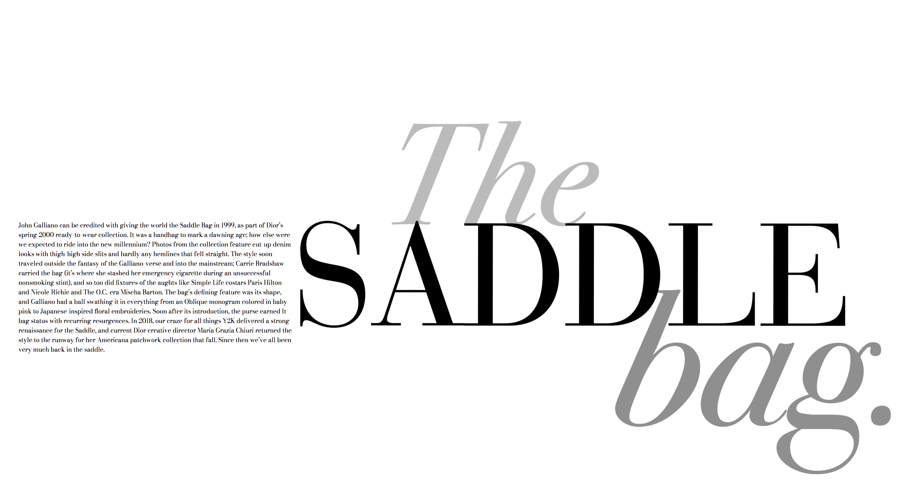

About Me
Hi, my name is Faith and I am currently a sophomore Communication Design student at The New School. My passion for digital design started at the young age of 11 where I spent hours in front of my acer computer drawing on KidPix. I have always felt a stronger connection to digital mediums compares to traditional techniques which is one of the reasons I chose to pursue my major in Communication Design.
have been working with digital design
Through my website portfolio, I hope you get to see my progress throughout my Interaction class in 2021. My goals for the following semester are to build my foundation in HTML and CSS whilst also incoporating Javascript into my website designs.
If you would like to see more of my work, feel free to take a look on my instagram: @designsbyfx

HOME